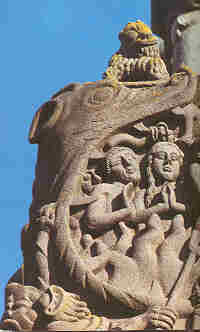
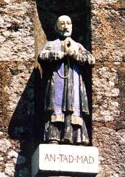
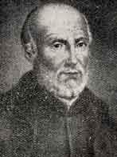
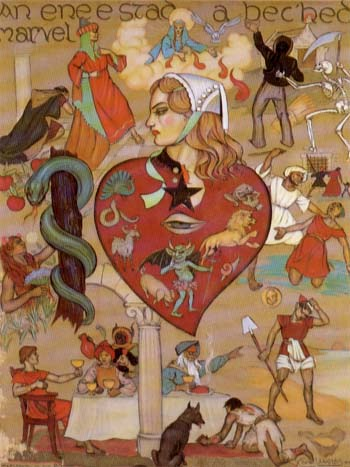

L'enfer
The Song of Hell
Dialecte de Léon
|
- sous forme de recueil : . "An exerciçou spirituel eus ar vues christen", Brest, Malassis, 1712 . " Canticou spirituel composet evit usaich ar misionoù". Quimper, Barazer, 1808: "Gwerz an Ifern". . par Souvestre, dans la "Revue des deux mondes" du 1.12.1834, page 506: "L'enfer' (trad.). Identique à la version des "Derniers Bretons". |
 |
- within a collection : . "An exerciçou spirituel eus ar vues christen", Brest, Malassis, 1712 . " Canticou spirituel composet evit usaich ar misionoù". Quimper, Barazer, 1808: "Gwerz an Ifern". . by Souvestre, in "Revue des deux mondes" from 1.12.1834, page 506: "Hell' (trad.). Identical with the version published in his "Derniers Bretons". |
Mélodie - Tune
(Ré mineur ou hypodorien)
| Français | English |
|---|---|
|
aux enfers pour contempler Le supplice effroyable qu'endurent les pauvres âmes damnées Que la justice de Dieu maintient dans le brasier ardent, Pour avoir mal usé de Ses grâces quand ils étaient vivants. 2. L'enfer est un abîme profond que remplissent les ténèbres, Et jamais la plus faible clarté ne luit en ce lieu funèbre. Les portes furent fermées à clé par Dieu qui jamais plus Ne reviendra les ouvrir: la clef en est à jamais perdue!. 3. Un four rougi à blanc ici-bas n'est que légère fumée, Au prix du feu de l'enfer, du feu qui dévore les damnés; Mieux vaudrait brûler, en ce four, jusqu'à la fin de la terre, Que d'être pendant une heure, tourmenté dans le feu de l' enfer. 4. Entendez-les hurler à tue-tête, comme des chiens enragés! Ils ne savent où fuir car partout de flammes ils sont cernés! Des flammes au dessus de leur tête, des flammes sous leurs pieds, Des flammes de tous côtés, qui les dévoreront à jamais. 5. Le fils s'élance sur son vieux père et la fille sur sa mère, Et ils les traînent par les cheveux dans le feu et vocifèrent: - Soyez maudite, femme perdue qui m'avez engendré; Et vous, mon père, insouciant, sans qui je n'aurais été damné.- 6. Leur pitance à jamais leur sera, préparée par le Démon: Ramassées dans les ruisseaux de feu, des ordures de dragons. Et pour boisson ils auront leurs larmes qui seront mêlées, De mille et mille immondices telles que sang de crapauds crevés. 7. Voyez, leur peau sera lacérée, leur chair sera déchirée Par les crochets des serpents et les dents des démons acharnés. Et au feu seront jetés leurs os, les lambeaux de leur chair, Pour alimenter encor La fournaise immense de l'enfer. 8. Après qu'ils auront été laissés un certain temps dans le feu, Satan les plongera dans un lac rempli de glace, avant de Les replonger dans les flammes comme l'on voit le forgeron Refroidir dans l'eau la barre Qu'il va replacer dans les tisons. 9. Alors ils se mettront à pleurer, A pleurer amèrement: - Ayez pitié de nous, ô mon Dieu Mettez fin au châtiment! - Mais vaines seront leurs lar- mes car tant que durera Dieu, Ne cesseront leurs tourments, Ne cesseront ces maux odieux. 10. Si vif sera le feu de l'enfer, Un feu si vif et ardent, Que se mettra la moelle à bouillir Au coeur de leurs ossements. Plus ils demanderont grâce Et plus ils seront tourmentés, Et ils auront beau hurler, Ils brûleront pour l'éternité. 11. Ce feu que la colère de Dieu Ne cesse pas d'attiser, Ce feu que Dieu ne pourrait éteindre quand bien même il le voudrait. Jamais, partant en fumée, N'éteindra ses tisons ardents Qui sans jamais les détruire les brûleront éternellement. |
O my Christian brethren all, The dreadful plight of the damned souls, Since they are to Hell in thrall. Pursuant to God's sentence that They should have in the flames their place For having in their lifetime Made so wrong use of His endless grace. 2. Hell is a bottomless abyss filled With darkness, a place into Which even most pallid light or gleam Won't be able to come through. The doors have been closed and locked By God and never shall they be Again opened by Him: Because lost for ever is the key! 3. An oven heated and made white-hot Here below is just like smoke Compared with the fire that burns in Hell The damned souls who retch and choke. And in this oven you should Prefer till Doomsday to be burnt Than to suffer but one hour In Hell's abominable torments. 4. One may scream at the top of his voice And roar like a rabid hound, In vain, he will have nowhere to flee: As there are flames all around. There are flames above his head, And there are flames below his feet. And there are flames on all sides To pain him forever with their heat. 5. The son throws himself on his sire as On her mother does the girl And they drag them with a thousand oaths Among the huge flaming swirl. - O foolish woman our curse on you And on you, reckless man Who brought us into the world. You are the reason why we are damned . - 6. For their sustenance for evermore Shall Satan himself provide, With manure from hellish dragons Collected in brooks of fire. And for drink they must be content With drinking their own sour tears Mixed with all sorts of refuse Like blood of a toad by way of beer. 7. And the skin will be flayed from them all And their flesh be torn to shreds By the fangs of hissing adders and The teeth of fiends full of dread. And into the fire will be Thrown their flesh along with their bones To fuel the furnace of Hell Full forever of the sound of moans. 8. After they have been left for some time In the torments of the blaze, They will be thrown into a lake Full of ice, in Satan's maze. And from the lake will they then Come back again to flame and stench. Then from the fire to the lake As does the smith who wants steel to quench. 9. Then they all will set to weeping, To weeping quite bitterly: - Have pity on us, O God of love, Don't give us up ruthlessly! - But they will lament in vain Because as long as God will be, These torments never will cease. Their pain will last an eternity. 10. And so hot will be the flames in Hell That they will burn even stones, So hot, that even the marrow will Boil within the hollow bones. The more the damned weep and wail, The more they suffer in return. However loudly they scream, Forever and ever they shall burn. 11. And kindled is this eternal flame Ever again by God's ire, Who, even if it were His own will, Never could put out this fire That never shall turn to smoke, Never shall be quenched or subside, But everlastingly shall Burn them and never cause them to die. |
(Textes bretons - Breton Texts)

|
 Ce texte est cité dans un livre d'histoire destiné aux lycées comme un monument d'obscurantisme médiéval (!). On remarquera cependant que le "Catéchisme de l'Eglise catholique" publié en 1992 fait encore une petite place à l'Enfer et cite l'Evangile qui parle de la "géhenne du feu qui ne s'éteint pas", de "fournaise ardente" et de "feu éternel". Cette conception orthodoxe -ce terrifiant cantique est attribué à un jésuite du 17ème siècle, le Bienheureux Père Julien Maunoir -, coexiste en Bretagne avec une autre selon laquelle, comme on peut le lire sur un bas relief de l'église de La Martyre, l'enfer est froid (An ifern yeun). La même notion apparaît dans le chant "Merlin au berceau" (strophe 35).Le Bienheureux Julien Maunoir (1606 - 1683) Dans l'"argument" introductif à ce chant, La Villemarqué, lui assigne une autre attribution possible: "On l'attribue tantôt au Père Morin qui vivait au XVème s., tantôt au Père Maunoir, jésuite du XVIIème s.; toutefois il ne se trouve pas dans la collection des Cantiques de ce dernier, mais dans un recueil du Père Martin , imprimé en 1650, où il diffère beaucoup de la version orale que nous publions". On peut douter qu'il ne s'agisse pas d'une composition du Père Maunoir tant cette pièce s'inscrit bien dans le style de prédication de celui-ci. Né en Haute-Bretagne, à Saint-Georges-de-Reintembault, près de Fougères, Maunoir vient chez les Bas-Bretons parce que la Compagnie de Jésus lui a refusé les Hurons. Il apprend donc le breton comme ses collègues des missions d'outre-mer apprennent le huron. Son apport à la langue bretonne Il l'apprend même si bien que l'on date l'apparition du breton moderne de la publication en 1642, de ses Canticou spirituel . Ceux-ci, en effet, rompaient avec une tradition datant de plusieurs siècles qui incluait dans l'orthographe des lettres inutiles. Ces chants observaient les mutations dans l'écriture et s'inspiraient pour la versification des règles courantes de la prosodie française. Cet exemple fut suivi par tous les auteurs postérieurs, trop heureux de devoir renoncer aux rimes internes comme dans: "Holl a gren ont gant sp ont war-benn tu-h ont k ont añ". Maunoir négligera cependant d'expulser les inutiles emprunts au français et il faudra attendre la publication du "Dictionnaire celto-breton ou breton-français" de Le Gonidec , en 1824, pour que se manifeste cette préoccupation chez les lettrés bretonnants. Les missions du Père Maunoir Le père Maunoir prend définitivement le relais de Michel Le Nobletz en 1640, et en reprend les méthodes (cantiques, prédication l'aide de "tableaux de mission", etc...). Son apport tient surtout dans la quantité et il enchaîne les missions sans discontinuer. A partir de 1650 il enrôle les prêtres de paroisse volontaire. La préparation des missions est l'objet de tous ses soins. Le jour de son arrivée il organise une procession avec lecture de la bulle d'indulgences, mais auparavant il a réglé les questions d'intendance, comme le logement des missionnaires. La mission dure environ un mois. Maunoir prêche trois fois par jour et prend les fidèles en charge toute la journée: prières, examens de conscience détaillés, méditations, apprentissage des cantiques et "conférence", c'est à dire une discussion avec les fidèles à partir de leurs questions. La quatrième semaine impose des journées plus longues pour faire une place aux confessions et à la préparation de la procession générale qui clôt la mission. Cette ultime cérémonie attire beaucoup de monde. En 1638, Maunoir compte 30.000 hosties consommées lors de la communion générale précédée du Saint-Sacrement et accompagnée d'une représentation théâtrale consacrée à la passion du Christ, compromis entre la culture de Basse-Bretagne et la pédagogie jésuite. A son décès, en 1683, il avait à son actif 375 missions en 40 ans. soit en tenant compte des autres missions, plus de 100.000 personnes chaque décennie. Interrompues pendant le révolution de 1789, les missions reprirent lentement sous le Premier Empire et connurent encore un immense succès pendant un siècle à partir de 1850. Le peintre Xavier de Langlais peignait encore des "taolennoù" en 1945. Les dernières (?) missions furent organisées en 1970. La béatification de Julien Maunoir L'enthousiasme soulevé par ces prédications, qui provoquait parfois des scènes d'hystérie collective, est à l'origine d'une vénération envers le "Tad mad" (le bon père) qui conduisirent les autorités à effectuer à partir de 1714 des enquêtes canoniques et à introduire cette cause auprès de la Sacrée Congrégation en 1875. Le 20 mai 1951 il fut procédé à la béatification solennelle de Julien Maunoir. Julien Maunoir est-il l'auteur du "Cantique de l'Enfer"? A l'appui de l'attribution au Père Maunoir du présent "Cantique de l'Enfer", voici le récit, par le Père Boschet, du couronnement de la mission organisée à Plouhinec en 1644. Celle-ci se terminait, "par un spectacle propre à inspirer une crainte salutaire et de durée. Il avait composé un cantique sur les tourments de l'enfer... C'est un dialogue instructif et pathétique , où les hommes qui sont encore sur la terre interrogent ceux qui souffrent aux enfers...A la fin de la procession générale, ... il fit monter sur un théâtre... les enfants qui devaient faire les interrogations au nom des vivants et il plaça sous le théâtre ceux qui devaient faire les réponses des damnés...Les voix sortant de dessous le théâtre...effrayèrent tellement la foule, au nombre de plus de 4000 personnes, que chacun se frappa la poitrine et forma de nouvelles résolutions de faire pénitence et d'éviter le péché." Maunoir le démonologue D'ailleurs Maunoir, de par la formation démonologique poussée qui était donnée aux jésuites, portant considérés comme des intellectuels, apparaît comme obsédé par Satan qu'il voit partout. Son catéchisme en breton, publié en 1659, insiste lourdement sur le thème, si bien qu'on le prend parfois pour un sorcier! Extrait de son catéchisme: "Question: Y a-t-il des moyens de différencier le diable d'un vrai homme? Réponse: Oui, par ses paroles qui sont mauvaises ou tirent à une méchante fin. Q. : Et encore? R. : Par ses pieds qui sont le plus souvent comme ceux d'un animal..." Sources: "L'âge d'or de la Bretagne 1532-1675" par Alain Croix (Ouest-France Université) et Guide Gallimard "Finistère Sud". Un collecteur de chant inattendu Voici un extrait d'"En Bretagne", un texte établi par Guy de Maupassant à partir de diverses chroniques parues dans "Le Gaulois" entre le 10 décembre 1880 et le 21 février 1883 ainsi que, sous le pseudonyme de Maufrigneuse, dans "Gil Blas" du 2 août 1882: Au bout de vingt minutes, j’atteignis un petit village. Un vieux prêtre, qui lisait son bréviaire à l’abri d’un mur de pierres, me salua. Je lui demandai où je pourrais coucher ; il m’offrit l’hospitalité. Une heure plus tard, assis tous deux devant sa porte, nous parlions de ce pays désolé qui saisit l’âme, quand un petit Breton, un enfant, passa devant nous, nu-pieds, secouant au vent ses longs cheveux blonds. Le curé l’appela dans sa langue maternelle, et le gamin s’en vint, devenu timide tout à coup, les yeux baissés et les mains inertes. - Il va vous réciter son cantique, me dit le prêtre ; c’est un gaillard doué d’une grande mémoire et dont j’espère tirer quelque chose. Et l’enfant se mit à bredouiller des paroles inconnues, sur ce ton geignant des petites filles qui répètent leur fable. Il allait sans point ni virgule, déroulant les syllabes comme si le morceau tout entier n’eût formé qu’un mot, s’arrêtant une seconde pour respirer, puis reprenant son chuchotement précipité. Tout à coup il se tut. C’était fini. Le curé lui caressa la joue d’une petite tape. — C’est bien, va-t’en. Et le polisson se sauva. Alors mon hôte ajouta : — Il vient de vous dire un vieux cantique de ce pays-ci ! Je répondis : - Un vieux cantique ? Est-il connu ? - Oh ! pas du tout. Je vais vous le traduire, si vous voulez. Alors le vieillard, d’une voix forte, s’animant comme s’il eût prêché, levant le bras d’un geste menaçant et enflant les mots, déclama ce naïf et superbe cantique dont j’ai voulu écrire les paroles sous sa dictée. (Note: On a indiqué entre crochets [ ] les n° des strophes du chant du Barzhaz qui s'en rappochent le plus ). [1] L'enfer! l’enfer! savez-vous ce que c’est, pécheursf [3] C’est une fournaise où rugit la flamme, une fournaise près de laquelle le feu d’une forge refermée, le feu qui a rougi les dalles d'un four, n'est que fumée! [2] Là jamais on n’aperçoit la lumière! Le feu brûle comme la fièvre sans qu’on le vole! Là jamais n’entre l'espérance; car la colère de Dieu a scellé la portel [4] Du feu sur vos têtes, du feu autour de vous! Vous avez faim ? — Mangez du feu! — Vous avez soif? — Buvez à cette rivière de soufre et de fer fondu. [9] Vous pleurerez pendant l’éternité; vos pleurs feront une mer; et cette mer ne sera pas une goutte d’eau pour l'enfer! Vos larmes entretiendront les flammes, loin de les éteindre; [10] et vous entendrez la moëlle bouillir dans vos os, [7] Et puis on coupera vos têtes de dessus vos épaules, et pourtant vous vivrez! Les démons se les jetteront l’un à l’autre, et pourtant vous vivrez | Ils rôtiront votre chair sur les brasiers ; vous sentirez votre chair devenir du charbon, et pourtant vous vivrez. [5] Et là, il y aura encore d’autres douleurs. Vous entendrez des reproches, des nalédictions et des blasphèmes. Le père dira à son fils : — Sois maudit, fils de ma chair! Car c’est pour toi que j'ai voulu amasser des biens par la rapinel Et le fils répondra : — Maudit, maudit sois-tu, mon père; car c’est toi qui m'as donné mon orgueil et qui m’as conduit ici! Et la fille dira à sa mère ; — Mille malheurs à vous, ma mère, mille mal- que à vous, caverne d'impuretés; car vous m'avez laissée libre, et j'ai quitté Dieu | Et la mère ne reconnaitra plus ses enfants; et elle répondra : — Malédiction sur mes filles et sur mon fils, malédiction sur les fils de mes illes et sur les filles de mes fils! [11] Et ces cris retentiront pendant l’Eternité. Et ces souffrances seront toujours. Et ce feu! ce feu! ... c’est la colère de Dieu qui l’a allumé, ce feul.. Il brûle toujours sans languir, sans fumer, sans pénétrer moins profondément vos os, . L’Eternité !.. Malheur!.. Ne jamais cesser de mourir, ne jamais cesser de se noyer dans un océan de souffrances !.. O jamais ! tu es un mot plus grand que la mer. O jamais ! tu es plein de cris, de larmes et de rage. Jamais! Oh! tu es rigoureux. Oh! tu fais peur!" Et quand le prêtre eut terminé, il me dit : — N’est-ce pas que c’est terrible ? Là-bas nous entendions la vague infatigable s’acharnant sur la sinistre falaise. Je revoyais ce trou plein d’écume furieuse, lugubre et hurlant, vrai séjour de la mort ; et quelque chose de l’effroi mystique qui fait trembler les dévots repentants pesait sur mon cœur. A. Le Bihan, qui cite ce texte dans un article publié par le "Fureteur breton" en 1908, tome 4, n) 19, p. 11-12, (//bibliotheque.idbe-bzh.org/data/cle_159/Le_Fureteur_Breton__nA_19__.pdf), ajoute: "Le texte de Guy de Maupassant se rapproche-t-il de celui du Père Martin? N'ayant pas le recueil du Père Martin, nous ne pouvons que poser la question." On peut en outre se demander si l'expressionnisme de la littérature orale bretonne n'aurait pas inspiré de façon plus ou moins consciente une terrifiante nouvelle de l'écrivain normand, la "Lettre d'un fou", publiée sous le pseudonyme de Maufrigneuse, en 1885, dans le quotidien" Gil Blas". Elle développe une histoire qui deviendra "Le HORLA", une longue nouvelle fantastique et psychologique parue en 1886, puis dans une seconde version en 1887. Dans ce récit psychologique, Maupassant présente un personnage autodestructeur constamment torturé, d'abord gagné par le doute et qui finit par sombrer dans la démence. C'était la première fois qu'on présentait l'évolution d'un trouble mental sous son angle médical à travers les pensées de celui qui le vit. Maupassant connaîssait à ce moment lui-même des troubles psychiatriques, symptômes neurologiques de la syphilis dont il devait mourrir cinq ans plus tard. En 1909, le "Fureteur breton" publiait une étude intitulée "Le Barzhaz de Maupassant" sous la plume d'un contributeur qui signait "HORLAER"! |
 This text is quoted in a history school book as a monument of medieval (!) obscurantism. One should bear in mind, however, that the "Catechism of the Catholic Church", published in 1992, still makes a wee bit of room for Hell and quotes the Gospels that repeatedly mention "the torment of the fire that shall never be quenched", "the blazing furnace" and "the eternal fire". This orthodox view -this terrifying hymn is ascribed to a 17th century Jesuit, the Blessed Father Julien Maunoir -, coexists in Brittany with another one: that Hell is cold, as asserted on a low-relief in La Martyre church ("an ifern yeun"). The same notion appears in the song "Merlin in his cradle" (verse 35).The blessed Julien Maunoir (1608 -1683) In the "argument" introducing this song, La Villemarqué considers another ascription: " This song is attributed either to Father Morin who lived in the 15th century, or to Father Maunoir, a 17th century Jesuit. However it is not included in the latter's hymn collection, known as "Canticou spirituel" , but in the collection of Father Martin , which was printed in 1650, a text thoroughly different from the version published here." We may question this assertion since the song at hand so fittingly matches Maunoir's demonological preoccupations. Born in Upper (=French speaking) Brittany at Saint-Georges-de-Reintembault, near Fougères, Maunoir chose to be sent as a missionary to Lower Brittany, though he would have preferred to the Huron Indians. Now he learned Breton, just as his colleagues learnt the Huron language. His contribution to enhancing the Breton language He learnt it so well that his collection of hymns published in 1642 is considered the first work in modern Breton , since the spelling he used broke with centuries-old tradition of useless orthographic exponents. In these lyrics the so-called consonantic mutations were noted and versification obeyed the same rules as French poetry. His example was followed by all subsequent authors, who were glad to get rid of the painstaking, old internal rhyme system, like in the verse: "Holl a gren ont gant sp ont war-benn tu-h ont k ont añ". However, Maunoir omitted to expel the useless barbarisms borrowed from the French and it was not until Le Gonidec published his "Celt-Breton or Breton-French Dictionary", in 1824, that attention was given by the educated Breton speakers to this issue. The missions of Father Maunoir Father Maunoir definitely took over from Michel Le Nobletz in 1640, and resumed his working methods (hymns, preaching with the help of "mission tables", etc...). His contribution chiefly consists in increasing the audience and his missions keep going on uninterruptedly. As from 1650, he enlists local parish priests who volunteer assistance. The missions are thoroughly and carefully prepared. On his arrival in a town, a procession is held, then the Papal bull on indulgences read out, but he has settled in advance all logistic issues, such as the missionaries' accommodation. The average duration of a mission is one month. Maunoir preaches three times a day and remains on duty all day through: he teaches the hymns, holds "conferences", i.e. he discusses with the congregation to answer their requests. The fourth week is still more testing: longer duty to insure that there is time enough for confessions and to prepare the concluding great procession. This final ceremony attracts many people. In 1638, after a mission, Maunoir posts 30,000 hosts consumed on the occasion of the general communion following the Mass and a theatre performance on the Passion of the Christ which was a compromise between Breton lore and Jesuits' pedagogy. When he died in 1683, he had performed 375 missions in 40 years, so that together with others' missions an average of over 100,000 people were addressed in each decade. Interrupted by the 1789 revolution, the missions were slowly revived under the First Empire and became very popular from 1850 onwards. The artist Xavier de Langlais was still painting "taolennoù" in 1945. The last (?) missions were organized in 1970. The beatification of Julien Maunoir The enthusiasm raised by his preaching that sometimes started up real scenes of mass hysteria, is at the origin of the veneration enjoyed by the "Tad mad" (Good Father), which prompted the local religious authorities, as early as 1714, to have his case investigated and to submit the request for his beatification in 1875. Julien Maunoir was solemnly beatified on 20th May 1951. Is Julien Maunoir the author of the "Song of Hell"? Here is, in support of the ascription to Father Maunoir of the present "Song of Hell", the narrative by Father Boschet of the crowning achievement in Maunoir's mission at Plouhinec, in 1644. The mission concluded with "a performance apt to inspire fear both salutary and long-lasting . He had compose a hymn on the torments of hell... It is an edifying and moving dialogue where the living that are still on earth ask the damned in hell... After the great procession, a stage was erected, whereon he placed the children who were to ask the dead on behalf of the living, whereas those who were to answer them took up position under it... The voices rising from beneath the stage floor scared so much the crowd of over 4,000 people, that everybody repented openly and loudly and made new resolutions that they would repent and avoid sinning." The demonologist Maunoir On many occasions, Maunoir, who had like all Jesuits, in spite of their reputation as intellectuals, a thorough training in demonology, appears to be obsessed by Satan whom he scents everywhere. His catechism in Breton, published in 1659, insists strenuously on the topic, so that he was sometimes considered a wizard! Excerpt from his Catechism: "Question: Are there ways to tell the devil from a real man? Answer: There are: by his words that are evil or tend to promote the pursuit of evil ends. Q. : Are there other ways? A. : He can be told by his feet that often are like those of an animal..." Sources: "L'âge d'or de la Bretagne 1532-1675" by Alain Croix (Ouest-France Université) and Guide Gallimard "Finistère Sud". An unexpected song collector Here is an excerpt from "En Bretagne", a text compiled by Guy de Maupassant from various chronicles published in "Le Gaulois" between December 10, 1880 and February 21, 1883, as well as, under the pseudonym of Maufrigneuse, in "Gil Blas" of August 2, 1882: "After twenty minutes, I reached a small village. An old priest, who was reading his breviary behind a stone wall, greeted me. I asked him where I could sleep; he offered me his hospitality. An hour later, the two of us sat in front of his door, we were talking about this gloomy country that seizes one's soul, when a little Breton, a child, passed in front of us, barefoot, shaking his long blond hair in the wind. The priest called him in his mother tongue, and the boy came over, suddenly becoming shy, his eyes lowered and his hands inert. - He is going to recite a hymn to you, said the priest; this young fellow has a good memory and I hope he will learn something in a future. And the child began to stammer words I could not understand, in the whining tone of little girls who recite a fable. He talked without a period or a comma, unrolling the syllables as if the entire piece was a single word, now and then pausing for a second to breathe, then resuming his hasty whisper. Suddenly he was silent. It was finished. The priest stroked his cheek with a light pat. "That's fine. Now go away! And the boy ran away. Then my host added: "He has just told you an old hymn from this country!" I replied: - An old hymn? Is it a well-known one? - Oh! no way. I'll translate it for you, if you want. Then the old man, in a loud voice, becoming animated as if he were preaching, raising his arm in a threatening gesture and puffing out the words, declaimed this naive and superb hymn, the words of which I wanted to write from his dictation. (Note: The stanzas of the hymn are preceded by the numbers in square brackets [ ] of those in the Barzhaz song that are closest to them). [1] Hell! Hell! Do you know what Hell is, ye sinners? [3] It is a furnace where a flame roars, a furnace compared to which the fire of a closed forge,that was able to set aglow the slabs of an oven, is but smoke! [2] There one never sees the faintest light! This invisible fire burns like fever! There hope never gets entry since the wrath of God has sealed the door [4] Fire on your heads, fire around you! Are you hungry ? - Eat fire!" - Are you thirsty? - Drink from this river of sulfur and molten iron!. [9] You will weep for eternity; your will shed a spate of tears; but this will not even be a drop of water in hell! Your tears will keep the flames going, far from extinguishing them; [10] And you will hear the marrow boiling in your bones, [7] And then your head will be cut off your shoulders, yet you will stay alive! The demons will throw it at each other, yet you will stay alive! They will roast your flesh on the braziers; you will feel your flesh turn to coal, yet you will stay alive. [5] And there will be still other pains. You will hear reproaches, curses and blasphemies. The father will say to his son: - Be cursed, son of my flesh! Because it is for you that I started stealing goods from othersl And the son will answer: - Cursed, cursed be you, my father; for it is from you that I inherited my pride and you have brought me here! And the daughter will say to her mother; - A thousand curses on you, my mother, a thousand curses on you, a true abyss of impurities; for you failed to control me, and I strayed away from God! And the mother will no longer recognize her children; and she will answer: "Curse on my daughters and on my sons, curse on my daughters' sons and on my sons' daughters!" [11] And these cries will resound through eternity. And these sufferings will last forever. And that fire! That fire it was the wrath of God that lit it. It still burns without relenting, without reeking, without turning your bones to ashes, Eternity!.. Woe is me!.. I'll never stop dying, never stop drowning in an ocean of suffering!.. O "Never" you are a word bigger than the ocean. O "Never", you are a word full of cries, tears and rage. O "Never!" you are a merciless, an appalling word!" And when the priest had finished, he said to me: "Isn't that terrible?" In the distance we heard the indefatigable wave relentlessly hitting the gloomy cliff. I saw again that hole full of furious foam, lugubrious and screaming, a real place of death; and something of the mystical dread that makes repentant devotees tremble weighed on my heart. A. Le Bihan, who quotes this text in an article published by the "Fureteur breton" in 1908, volume 4, n° 19, p. 11-12, (//bibliotheque.idbe-bzh.org/data/cle_159/Le_Fureteur_Breton__nA_19__.pdf), adds: "Is Guy de Maupassant's text similar to that of Father Martin? Since I don't have Father Martin's collection, I can only ask the question." One also may wonder if the expressionism of Breton oral literature did not have more or less consciously inspire Maupassant with a terrifying short story, the "Lettre d'un fou", he published under the pseudonym of Maufrigneuse in 1885, in the daily "Gil Blas". It recounts a story that was to become "The HORLA", a long fantastic and psychological short story published first in 1886, then in a second version in 1887. In this psychological story, Maupassant presents an ever tortured self-destructive character, first overcome by doubt, whith ends up sinking into dementia. It was the first time that the progress of a mental disorder was presented from a medical point of view, through the thoughts of the person who experienced it. Maupassant was suffering at this time from psychiatric disorders, neurological symptoms of syphilis from which he was to die five years later. In 1909, the "Fureteur breton" published a survey entitled "Le Barzhaz de Maupassant" contributed by a named "HORLAER"! |
